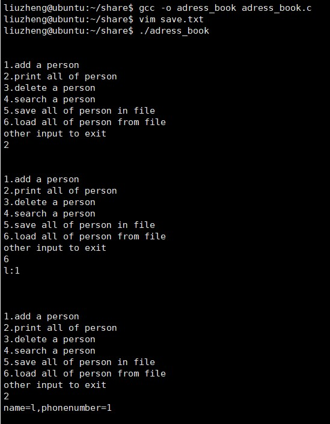

C++中的文件操作 这一篇开始，我们正式的接触Linux下的C/C++开发，我们使用两个案例帮助大家，快速的掌握流程。
首先，我们来复习一下C++中对文件应该如何操作。在C++中有一个标准库叫fstream，它其中有三个类，分别是：
ofstream：该类表示输出文件流，用于创建文件并向文件中写入信息
ifstream：该类表示输入文件流，用于从文件读取信息
fstream：该类表示文件流，它同时具有ifstream和ofstream两种功能
要想在C++中对文件进行处理，那么我们就要同时将头文件fstream和iostream同时引入。
打开/关闭文件 我们对文件操作，那我们必然是先打开文件，所以我们实例化一个对象，通过调用实例的open方法来打开一个文件，open含有两个参数一个是文件名，一个是打开模式。打开模式有以下几种：
ios::app：追加模式，所有的写入都将追加到文尾
ios::ate：文件打开后定位到文件尾部
ios::in：打开文件用来读取
ios::out：打开文件用来写入
ios::trunc：如果文件存在，其内容将在打开文件之前被截断，即把文件长度设为0
这些打开模式可以结合使用，比如如果您想要以写入模式打开文件，并希望截断文件，以防文件已存在那么你可以使用ios::out|ios::trunc 模式打开文件。
当然有打开就要有关闭，关闭也很简单也是通过对象调用close()函数。
读取与写入 在 C++ 编程中，我们使用流插入运算符（ << ）向文件写入信息，使用流提取运算符（ >> ）从文件读取信息，要注意的的是，在这里需要使用 ofstream 或 fstream 对象。
C文件的读写 都说C和C++不分家，那我们也来复习一下C的文件读写。在C里面我们使用FILE*类型数据进行操作。
打开/关闭文件 在C里我们使用fopen函数创建一个新的文件或者打开一个已有的文件并且返回一个FILE类型的指针，fopen函数的原型是这样的**FILE *fopen(const char *filename,const char *mode)**。这里，filename是字符串，用来命名文件，mode是访问模式，mode的值可以是以下的值中的一个：
r：打开一个已有的文本文件，允许读取文件。
w：打开一个文本文件，允许写入文件。如果文件不存在，则会创建一个新文件。在这里，你的程序会从文件的开头写入内容。如果文件存在，则会被截断为零长度，重新写入。
a：打开一个文本文件，以追加模式写入文件。如果文件不存在，则会创建一个新文件。
r+：打开一个文本文件，允许读写文件。
w+：打开一个文本文件，允许读写文件。如果文件已存在，则文件会被截断为零长度，如果文件不存在，则会创建一个新文件。
a+：打开一个文本文件，允许读写文件。如果文件不存在，则会创建一个新文件。读取会从文件的开头开始，写入则只能是追加模式。
如果处理的是二进制文件需要使用下列访问模式取代上列访问模式：
“rb”, “wb”, “ab”, “rb+”, “r+b”, “wb+”, “w+b”, “ab+”, “a+b”。
在C里面我们使用int fclose(FILE *fp)关闭一个文件。
读取与写入 下面是把字符写入到流中的最简单的函数：*int fputc( int c, FILE fp )
函数 fputc() 把参数 c 的字符值写入到 fp 所指向的输出流中。如果写入成功，它会返回写入的字符，如果发生错误，则会返回 EOF 。你可以使用下面的函数来把一个以 null 结尾的字符串写入到流中：**int fputs( const char s, FILE fp );
函数 fputs() 把字符串 s 写入到 fp 所指向的输出流中。如果写入成功，它会返回一个非负值，如果发生错误，则会返回 EOF 。您也可以使用 int fprintf(FILE *fp,const char *format, …) 函数把一个字符串写入到文件中。但记得这样写的时候和和**fflush(FILE * fp)**组合使用，才能将fprint写到缓存里的数据，落盘到磁盘里。
下面是从文件读取单个字符的最简单的函数：int fgetc( FILE * fp );
fgetc() 函数从 fp 所指向的输入文件中读取一个字符。返回值是读取的字符，如果发生错误则返回 EOF 。下面的函数允许您从流中读取一个字符串：**char *fgets( char buf, int n, FILE fp );
函数 fgets() 从 fp 所指向的输入流中读取 n - 1 个字符。它会把读取的字符串复制到缓冲区 buf ，并在最后追加一个 null 字符来终止字符串。
如果这个函数在读取最后一个字符之前就遇到一个换行符 ‘\n’ 或文件的末尾 EOF，则只会返回读取到的字符，包括换行符。您也可以使用 int fscanf(FILE *fp, const char *format, …) 函数来从文件中读取字符串，但是在遇到第一个空格和换行符时，它会停止读取。
结构体 C/C++ 数组允许定义可存储相同类型数据项的变量，但是结构体是C/C++ 中另一种用户自定义的可用的数据类型，它允许你存储不同类型的数据项。比如我们可以定义一个书类，我们可以在其中使用string当做书名，int当做价格等等，然后我们可以使用这个自定义的类型声明变量，通过使用操作符“.”来访问它们。
1 2 3 4 5 6 7 8 9 10 11 12 13 14 15 16 17 18 19 20 21 22 23 24 25 #include <iostream> #include <string> using namespace std;struct Books { string title; string author; int book_id; }; int main ( ) Books Book1; Book1.title="clean code" ; Book1.author="Bob" ; Book1.book_id = 12345 ; cout << "第一本书标题 : " << Book1.title <<endl; cout << "第一本书作者 : " << Book1.author <<endl; cout << "第一本书 ID : " << Book1.book_id <<endl; return 0 ; }
结果：
案例1：文件中有多少个单词？ 接下来的案例，我们来统计一个文件中有多少个单词，我们用C++实现这样的功能，我们先对案例进行分析，首先，我们要有个文件，如果没有文件我们是不能进行处理的，所以我们在开始要有一个判断，是否有文件传给我们了，然后我们要想一个方法去计算到底有多少个单词，这里我们使用的办法是用有穷状态机去解决，我们一个一个字符的读取，然后判断它在不在一个单词里面，如果是单词里面的字符那么我们就把状态更改为in_word，如果不是单词里的字符那么我们就把状态更改为out_word，这样我们只需要记录有多少次状态转换就可以记录有多少个单词了。下面来看详细代码：
1 2 3 4 5 6 7 8 9 10 11 12 13 14 15 16 17 18 19 20 21 22 23 24 25 26 27 28 29 30 31 32 33 34 35 36 37 38 39 40 41 42 43 44 45 46 47 48 49 #include <iostream> #include <fstream> using namespace std;#define out_word 0 #define in_word 1 #define init out_word const bool is_split (char *word) if (' ' ==*word||',' ==*word||'!' ==*word||'\n' ==*word) { return true ; } else { return false ; } } int count_words (char * file) int word_nums=0 ; int status=init; ifstream countedfile; countedfile.open (file,ios::in); if (!countedfile.is_open ())return -1 ; while (!countedfile.eof ()) { char SingleWord; countedfile >> noskipws; countedfile >> SingleWord; countedfile >> skipws; if (is_split (&SingleWord)) { status=out_word; }else if (status==out_word) { status=in_word; word_nums++; } } return word_nums; } int main (int argc,char *argv[]) if (argc<2 )return 0 ; cout<<"word:" <<count_words (argv[1 ])<<endl; }
好了现在我们已经在vscode里面写好了业务逻辑，我们将它保存到我们之前建立的share文件中，之后我们打开xshell。进入share文件。
接下来我们先编译一下我们写好的cpp文件。编译链接代码的指令是g++ 源文件名 -o 生成的可执行文件名 ，也可以使用gcc进行编译但我们编译c++还是建议使用g++。
编写一个测试用例。我们可以看到测试用例有15个单词。
运行编译好的程序。
看程序成功的运行了，我们已经迈出了前往星辰大海的第一步。
案例2：实现一个通讯录 接下来我们要实现一个通讯录，通讯录包括的功能有：
添加一个人员
打印显示所有人员
删除一个人员
查找一个人员
保存文件
加载文件
根据需求，我们得到了以下问题：
人员如何存储 —— 因为不涉及排序问题所以我们这里使用双向链表来存储。
人员信息——最基本的我们要有姓名和信息
文件存储——我们以最简单的name=xxx,phone=xxx的格式保存，每一行对应一个人
这一次我们使用C来完成这些功能，因为C的编译指令和C++些许不同，在着我们可以借机复习一下链表。接下来看详细代码：
1 2 3 4 5 6 7 8 9 10 11 12 13 14 15 16 17 18 19 20 21 22 23 24 25 26 27 28 29 30 31 32 33 34 35 36 37 38 39 40 41 42 43 44 45 46 47 48 49 50 51 52 53 54 55 56 57 58 59 60 61 62 63 64 65 66 67 68 69 70 71 72 73 74 75 76 77 78 79 80 81 82 83 84 85 86 87 88 89 90 91 92 93 94 95 96 97 98 99 100 101 102 103 104 105 106 107 108 109 110 111 112 113 114 115 116 117 118 119 120 121 122 123 124 125 126 127 128 129 130 131 132 133 134 135 136 137 138 139 140 141 142 143 144 145 146 147 148 149 150 151 152 153 154 155 156 157 158 159 160 161 162 163 164 165 166 167 168 169 170 171 172 173 174 175 176 177 178 179 180 181 182 183 184 185 186 187 188 189 190 191 192 193 194 195 196 197 198 199 200 201 202 203 204 205 206 207 208 209 210 211 212 213 214 215 216 217 218 219 220 221 222 223 224 225 226 227 228 229 230 231 232 233 234 235 236 237 238 239 240 241 242 243 #include <stdio.h> #include <malloc.h> #include <string.h> #include <stdlib.h> #define insert_person(person,address_book)\ do {\ if (address_book->people==NULL )\ {\ address_book->people=person;\ person->next_people=NULL ;\ person->front_people=NULL ;\ }else \ {\ person->next_people=address_book->people;\ address_book->people->front_people=person;\ person->front_people=NULL ;\ address_book->people=person;\ }\ } while (0 ); #define remove_person(person,address_book)\ do{\ if (person->front_people!=NULL)person->front_people->next_people=person->next_people;\ if (person->next_people!=NULL)person->next_people->front_people=person->front_people;\ if (address_book->people==person){\ address_book->people=person->next_people;\ address_book->people->front_people=NULL;\ }\ person->front_people=person->next_people=NULL;\ } while(0); #define MAX_name_length 16 #define MAX_phone_length 13 #define Max_buffer_length 255 #define Mini_token 20 enum {1 ,Print,Delete,Search,Save,Load};struct person //结构体 人{ struct person * next_people ; struct person * front_people ; char name[MAX_name_length]; char phonenumber[MAX_phone_length]; }; struct address_book //结构体 通讯录{ struct person *people ; int count; }; int add_person_into_address_book (struct address_book *ab,struct person *people) { if (people==NULL )return -1 ; insert_person(people,ab); return 0 ; } int remove_person_from_address_book (struct person *person,struct address_book *ab) { if (person==NULL )return -1 ; remove_person(person,ab); free (person); return 0 ; } int add_person (struct address_book* ab) { if (ab==NULL )return -1 ; struct person * people =struct person*)malloc (sizeof (struct person)); if (people==NULL )return -2 ; printf ("input name:" ); scanf ("%s" ,people->name); printf ("input phone number:" ); scanf ("%s" ,people->phonenumber); add_person_into_address_book(ab,people); return 0 ; } int delete_person (struct address_book* ab) { char name[MAX_name_length]={0 }; struct person * item =NULL ; printf ("input name:" ); scanf ("%s" ,name); for (item = ab->people; item != NULL ; item=item->next_people) { if (!strcmp (name,item->name))break ; } if (item==NULL )return -1 ; remove_person_from_address_book(item,ab); return 0 ; } int print_address_book (struct address_book* ab) { if (ab==NULL )return -1 ; struct person * item =NULL ; for (item = ab->people; item != NULL ; item=item->next_people) { printf ("name=%s,phonenumber=%s\n" ,item->name,item->phonenumber); } return 0 ; } int search_person (struct address_book* ab) { char name[MAX_name_length]={0 }; struct person * item =NULL ; printf ("input name:" ); scanf ("%s" ,name); for (item = ab->people; item != NULL ; item=item->next_people) { if (!strcmp (name,item->name)) { printf ("name=%s,phonenumber=%s\n" ,item->name,item->phonenumber); return 0 ; } } return -1 ; } int parser_token (char * buffer,int length,char *name,char *phonenumber) { if (buffer==NULL )return -1 ; int i=0 ,j=0 ,status=0 ; for (;buffer[i]!=',' ; i++) { if (buffer[i]==' ' ) { status=1 ; } else if (status==1 ) { name[j++]=buffer[i]; } } status=0 ,j=0 ; for (;i < length; i++) { if (buffer[i]==' ' ) { status=1 ; } else if (status==1 ) { phonenumber[j++]=buffer[i]; } } return 0 ; } int load_address_book (struct address_book* ab) { FILE* fp=fopen("save.txt" , "r" ); if (fp==NULL )return -1 ; int status=0 ; while (!feof(fp)) { char buffer[Max_buffer_length]={0 }; fgets(buffer,Max_buffer_length,fp); int length=strlen (buffer); if (length>Mini_token){ struct person * people =struct person*)malloc (sizeof (struct person)); parser_token(buffer,length,people->name,people->phonenumber); add_person_into_address_book(ab,people); } } } int save_address_book (struct address_book* ab) { FILE *fp=fopen("save.txt" ,"w" ); if (fp==NULL )return -1 ; struct person * item =NULL ; for (item = ab->people; item != NULL ; item=item->next_people) { fprintf (fp,"name= %s,phonenumber= %s\n" ,item->name,item->phonenumber); fflush(fp); } fclose(fp); printf ("success, the date in the save.txt\n" ); return 0 ; } int main () { int choose = 0 ; struct address_book *ab =struct address_book*) malloc (sizeof (struct address_book)); memset (ab,0 ,sizeof (struct address_book)); if (ab==NULL )return -1 ; ab->people = NULL ; ab->count=0 ; while (1 ) { printf ("\n\n" ); printf ("1.add a person\n" ); printf ("2.print all of person\n" ); printf ("3.delete a person\n" ); printf ("4.search a person\n" ); printf ("5.save all of person in file\n" ); printf ("6.load all of person from file\n" ); printf ("other input to exit\n" ); scanf ("%d" ,&choose); switch (choose) { case Add: add_person(ab); break ; case Print: print_address_book(ab); break ; case Delete: delete_person(ab); break ; case Search: search_person(ab); break ; case Save: save_address_book(ab); break ; case Load: load_address_book(ab); break ; default : goto exit ; break ; } } exit : free (ab); return 0 ; }
同样我们将文件放到share里面，然后打开xshell，进入share文件，输入gcc -o 可执行文件名 源代码名 ，编译并链接。
编写一个测试用例。最小处理长度就是**name= ,phonenumber= **的长度 。
运行我们的程序，这里我们只演示从文件中加载出来所有信息，其余可自行测试。



 wechat
wechat alipay
alipay